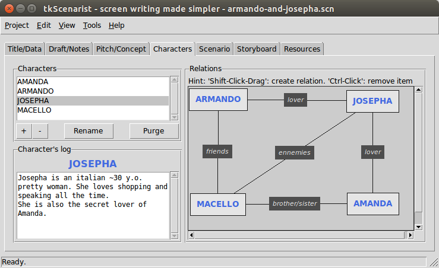

Return to summary.
This app tab manages with movie characters, their names, history logs and relationships.
It is composed of:
All section panes are resizable: put mouse pointer between each pane, then click and drag sash to get desired size.
Return to summary.
Click on + button to add a new character name.
Character names are automatically set to uppercase: this is a script writing policy.
Character names must be unique.
Return to summary.
First, select a character name into the list, then click on Rename
button.
Please, note it is NOT possible to rename a character name once it is mentioned into 'Scenario' tab's text editor contents.
New character name must be as unique as any other one.
Return to summary.
First, select a character name into the list, then click on - button.
A confirmation dialog will popup before deleting definitely.
Please, note it is NOT possible to delete a character name once it is mentioned into 'Scenario' tab's text editor contents.
Return to summary.
One may need to clean up characters' name list in order to keep only scenario's mentioned names.
Click on Purge button to delete all unmentioned names.
A confirmation dialog will popup before deleting definitely.
Return to summary.
First, select a character name into the list, then click into character's history log text zone.
The big white zone is called a plain text editor.
This object allows multiple line editing with carriage return, undo/redo stack and many other features.
Pressing on the carriage return key will insert a new paragraph.
Double-clicking on a word will select this word only.
Triple-clicking on a word will select the whole paragraph.
You may select all text by using Edit > Select all menu option or
with <Ctrl-A> keyboard shortcut.
Any selection band is likely to be replaced by the next keystroke on the keyboard.
To undo last operation, either use Edit > Undo menu option or try
<Ctrl-Z> keyboard shortcut.
To redo last cancelled operation, either use Edit > Redo menu
option or try <Ctrl-Shift-Z> keyboard shortcut.
Please, note this text editor manages with automatic backup feature: anything you enter into this object will be automatically saved into software's memory. However, this does not exempt you from saving your project file regularly.
Return to summary.
Simply double-click on a canvas empty zone (grey zone).
Character names are automatically set to uppercase: this is a script writing policy.
Character names must be unique.
Return to summary.
Double-click onto desired character name label on the canvas.
Please, note it is NOT possible to rename a character name once it is mentioned into 'Scenario' tab's text editor contents.
New character name must be as unique as any other one.
Return to summary.
Do a <Ctrl-Click> onto desired character name label on the canvas.
This may be obtained by clicking on target while pressing <Ctrl> key
down on your keyboard.
A confirmation dialog will popup before deleting definitely.
Please, note it is NOT possible to delete a character name once it is mentioned into 'Scenario' tab's text editor contents.
Return to summary.
Press <Shift> key on your keyboard while clicking onto start
character name label on the canvas and dragging link to a destination
character name label. Release then mouse click and <Shift> key.
Please, note adding a new relationship must respect the followings:
A relationship is made of a black drawn line with its associated black relationship text label.
Return to summary.
Double-click onto desired relationship text label on the canvas.
Return to summary.
Do a <Ctrl-Click> onto desired relationship text label on the canvas.
This may be obtained by clicking on target while pressing <Ctrl> key
on your keyboard.
A confirmation dialog will popup before deleting definitely.
Return to summary.
Clicking onto a character name label on the canvas will also select this name into characters' name list, on top-left side.
Conversely, clicking on a list item will try to show up the name label on the canvas, especially if it is out of viewport bounds.
Character name labels on the canvas do support Drag'n'Drop feature:
click on desired character name label, drag it to another location and
then release mouse click to drop it there.
One may browse easily into relationships canvas by clicking onto an empty zone (grey zone), moving mouse to the desired direction and then releasing mouse click when arrived.
IMPORTANT: don't forget to save your project regularly, either
with Project > Save menu option or with <Ctrl-S> keyboard shortcut.
Return to summary.
Return to homepage.